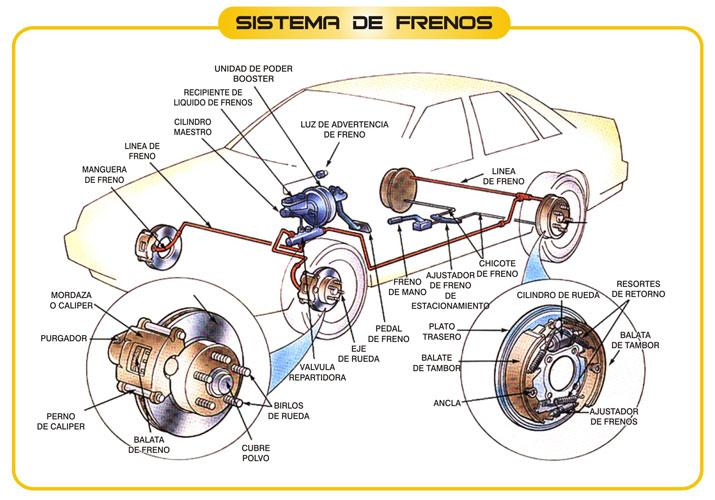
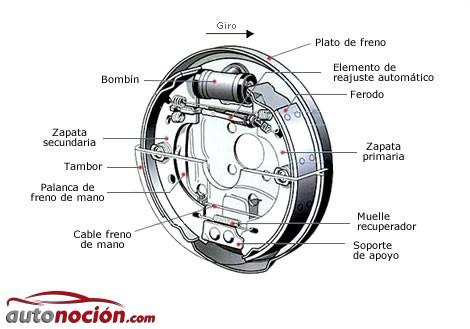
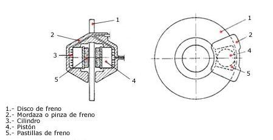
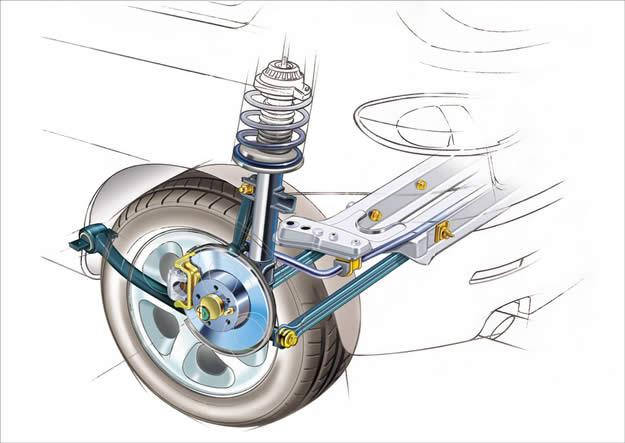
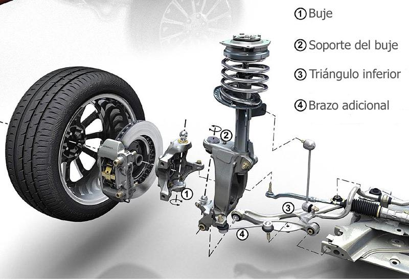
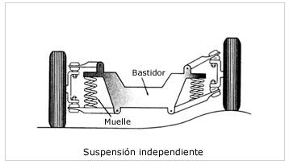
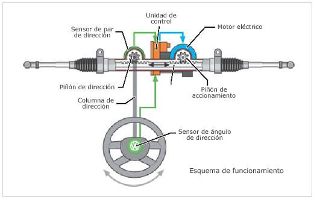

El servofreno
Es el elemento que ayuda al conductor en la acción de frenado. Su función es incremantar la fuerza que ejerce el conductor sobre el pedal de freno, mejorando considerablemente la frenada.
El servofreno funciona por medio del vacío generado en el colector de admisión del propio motor del vehículo. En los motores gasolina este vacío es suficiente para el funcionamiento del servofreno, pero en los motores Diésel, la depresión que se origina en el colector de admisión no es suficiente y se necesita de una bomba de vacío auxiliar.
La bomba de frenado
La función de la bomba de frenos, es la de convertir o transformar la fuerza mecánica de la presión ejercida por el conductor del vehículo sobre el pedal de freno, en presión hidráulica (reforzada o no por un servofreno).Por medio de canalizaciones, esta presión es transmitida a los bombines de las ruedas que accionan los frenos.
PRESIÓN = FUERZA / SUPERFICIE
Esfuerzo sobre el pedal / Sección del pistón de la bomba
Principio hidráulico: El efecto fundamental del sistema hidráulico se basa en la Ley de Pascal.
Ley de Pascal: La presión que se ejerce en un líquido recogido en un recipiente, se transmite uniformemente en todas la direcciones.
Traseros de Tambor
En la parte trasera del vehículo el Chevrolet spark cuenta con frenos de tambor en ambas ruedas este tipo de frenos, está compuesto por una parte móvil, llamada tambor, que está montado sobre el buje de la rueda por medio de unos espárragos y tuercas, y un elemento fijo, llamado plato, el cual, lleva instalados los forros y los mecanismos de accionamientos para que puedan desplazarse las zapatas.
Antes de entrar a describir los diferentes tipos de frenos de tambor, haremos una breve descripción de cada uno de sus componentes, para que tengamos una idea más clara a la hora de entender cómo es el funcionamiento de este sistema.
Cuando desmontamos una rueda que esté provista de estos frenos, lo primero que nos vamos a encontrar va a ser el tambor. Esta pieza es la parte giratoria del freno y la que se va a llevar prácticamente todo el calor generado en el frenado. Normalmente está fabricado en fundición, ya que es un material de bajo costo y con un alto coeficiente de absorción de calor.
El tambor se tornea interior y exteriormente para conseguir un equilibrado dinámico, mediante un mecanizado muy fino en su parte interna para que los ferodos acoplen de una forma óptima sin que se agarroten. En su zona central, el tambor, lleva unos taladros pasantes que servirán para acoplar los espárragos de fijación de la rueda, además de otros orificios que nos servirán como guía de centrado de la rueda al buje.
El segundo elemento externo que veremos será el plato de freno, que junto con el tambor, completa el conjunto de freno de tambor.
El plato de freno está compuesto por un plato portafrenos, sobre el que se monta un bombín de accionamiento hidráulico, las zapatas de freno y los demás elementos de fijación y regulación de las zapatas.
Por otra parte, las zapatas se unen en uno de sus extremos al bombín hidráulico y por el otro a un soporte que puede ser fijo o regulable. Al mismo tiempo se unen con el plato de freno mediante un muelle que permite su movimiento hacia el tambor manteniéndolas fijas durante su desplazamiento. Este muelle, permite que las zapatas vuelvan a su estado original un vez ha dejado de actuar el bombín.
En tercer lugar tenemos las zapatas. Elementos que, generalmente, están formadas por dos chapas de acero soldadas con forma de media luna, y recubiertas en su parte externa por los forros de freno, los cuales están unidos a la zapata mediante remaches embutidos o pegados con cola de contacto. Éstos serán los encargados de frenar mediante fricción con el tambor.

Delanteros de Disco
El sistema del Chevrolet spark en sus dos ruedas delanteras se constituye por frenos de disco ventilados, ya que su frenado es más enérgico en comparación con los frenos de tambor, obteniéndose un menor tiempo de frenado y por tanto una menor distancia de frenada. Esto es debido a que los elementos de fricción están montados al aire con lo que mejora la refrigeración, por lo que la absorción de energía y su transformación se realizan más rápidamente.
Una gran ventaja que tiene los frenos de disco frente a los de tambor es que no aparece el tan temido efecto fading, que se produce por un frenado muy enérgico o muy continuado, como en la bajada de un puerto de montaña, ya que en los frenos de tambor, el tambor se dilata de modo que las zapatas no llegan a entrar en contacto con la superficie de adherencia, dejando al vehículo temporalmente sin frenos (perdida transitoria de frenado). En el caso del sistema de discos, al mejorar la evacuación de calor, no se produce este calentamiento crítico y por lo tanto dilatación. En el caso de que se produjera, el disco se aproximaría más a las pastillas, favoreciendo la presión y el efecto de frenado.
Su funcionamiento es el siguiente: el disco es solidario con el eje de la rueda y está situado dentro de la pinza, sobre cuyos brazos están colocadas las placas de fricción. Cuando pisamos el pedal de freno, se genera una presión sobre los émbolos situados en los cilindros de la pinza, empujando las placas de fricción que entran en contacto con el disco, produciéndose el efecto de frenado gracias al rozamiento de éstas sobre el disco.

Suspensiones
• Suspensión delantera
Chevrolet Spark cuenta con el sistema de suspensión McPherson para empezar comenzamos con el termino suspensión se refiere al conjunto de componentes, los cuales conectan las ruedas con el chasis del vehículo lo cual permite un relativo movimiento entre ambos, esto es con finalidad primeramente de mantener el coche bien estable ante las grandes fuerzas que se genera cuando un vehículo se desplaza, y por supuesto la de generar el más agradable confort y comodidad en el conductor y pasajeros a bordo del coche.
Si bien tiene como ventajas su simplicidad y bajo costo de fabricación, tiene un problema geométrico, ya que debido a su configuración no es posible que el movimiento de la rueda sea vertical, sino que el ángulo vertical varía algunos grados durante su movimiento. Además transmite el movimiento directamente del asfalto al chasis, lo que provoca ruidos y vibraciones en el habitáculo.
Con este tipo de suspensión de rueda, las ruedas son controladas por un brazo oscilante bajo el centro de gravedad de la rueda (normalmente un brazo oscilante triangular), un montante de suspensión y una varilla de guía. Los brazos oscilantes están fijados al subbastidor por dos soportes de goma-metal. La separación funcional de las fuerzas longitudinales (soporte delantero) y laterales (soporte trasero) permiten alcanzar una agilidad, una seguridad y un confort de marcha óptimos sin que ambas fuerzas se influyan mutuamente. En la práctica, este diseño de eje es notable por los elevados niveles de confort de marcha y la excelente seguridad que proporciona. Las ventajas del eje McPherson son una menor masa no suspendida, una amplia base de apoyo, fuerzas reducidas y un diseño más compacto. Esta construcción, bautizada en honor a su creador, ha sido perfeccionada continuamente en el curso de las décadas, y actualmente es un elemento estándar en muchos vehículos hasta la clase de tamaño medio.


• Suspensión trasera independiente con bastidor
Esta configuración se ha convertido en una de las más utilizadas gracias a la diminución de peso de las ruedas traseras en los vehículos de tracción delantera.
El funcionamiento en su forma tradicional, consiste en que los brazos de la suspensión pivotan alrededor de un eje que está en paralelo sobre el suelo y en posición transversal al coche. De esta forma, las ruedas se mueven de forma independiente durante la conducción. Pero la situación cambia en el momento que se producen balanceos, ya que forman el mismo ángulo que la carrocería, provocando que esos movimientos de balanceo sean mayores que en el resto de las suspensiones independientes.
Como el balanceo se transmite integra y de igual forma a las ruedas, se genera una pérdida de capacidad de giro del vehículo.
En coches con propulsión trasera, su nombre pasa a llamarse “semi trailing arms”, ya que encontramos una variación de este diseño, de modo que los ejes de pivotamiento de los brazos de la suspensión forman un cierto ángulo. Con esta disposición se mejoran las capacidades de giro al mismo tiempo que se mantiene el comportamiento subvirador, debido a que se mantienen tanto el ángulo como la convergencia de las ruedas.

Dirección Electro asistida
La dirección asistida eléctricamente: Se cambia el motor hidráulico por uno eléctrico que se acciona solo en los momentos necesarios reduciendo el consumo de gasolina.
La EPS o dirección asistida eléctricamente tiene como componentes principales un sensor de par montado en el eje del volante, un motor eléctrico acoplado al eje de dirección y un computador que monitorea el funcionamiento y acciona el motor eléctrico. En el momento que se gira el volante, el sensor capta el torque del giro o la fuerza que se le aplica, la que es recibida por el computador de la dirección, el cual acciona el motor eléctrico que ayuda a girar el eje de la cremallera de dirección.
En la dirección asistida electromecánica cuenta con doble piñón. Se aplica la fuerza necesaria para el mando de la dirección a través de uno de los piñones llamado "piñón de dirección" y a través del otro piñón llamado "piñón de accionamiento". El piñón de dirección transmite los pares de dirección aplicados por el conductor y el piñón de accionamiento transmite, a través de un engranaje de sin fin, el par de servoasistencia del motor eléctrico para hacer el gobierno de la dirección más fácil..
Este motor eléctrico con unidad de control y sistema de sensores para la servoasistencia de la dirección va asociado al segundo piñón. Con esta configuración está dada una comunicación mecánica entre el volante y la cremallera. De esa forma se sigue pudiendo dirigir mecánicamente el vehículo en caso de averiarse el servomotor.
Funcionamiento
1. El ciclo de servoasistencia de dirección comienza al momento en que el conductor mueve el volante.
2. Como respuesta al par de giro del volante se tuerce una barra de torsión en la caja de dirección. El sensor de par de dirección (situado en la caja de dirección) capta la magnitud de la torsión e informa sobre el par de dirección detectado a la unidad de control de dirección asistida.
3. El sensor de ángulo de dirección, informa sobre el ángulo momentáneo y el sensor de régimen del rotor del motor eléctrico informa sobre la velocidad actual con que se mueve el volante.
4. En función del par de dirección, la velocidad de marcha del vehículo, el régimen del motor de combustión, el ángulo de dirección, la velocidad de mando de la dirección y las curvas características implementadas en la unidad de control, ésta calcula el par de servoasistencia necesario para el caso concreto y excita correspondientemente el motor eléctrico.
5. La servoasistencia a la dirección se realiza a través de un segundo piñón que actúa paralelamente sobre la cremallera. Este piñón es accionado por un motor eléctrico. El motor ataca hacia la cremallera a través de un engranaje de sin fin y un piñón de accionamiento y transmite así la fuerza de asistencia para la dirección.
6. La suma compuesta por el par de giro aplicado al volante y el par de servoasistencia constituye el par eficaz en la caja de dirección para el movimiento de la cremallera.
